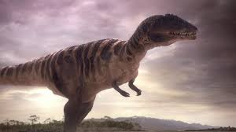

Karchadontozaur, znany również jako Carcharodontosaurus, był jednym z największych i najpotężniejszych drapieżników żyjących w okresie wczesnej i środkowej kredy, około 112-93 miliony lat temu. Jego nazwa oznacza "rekinowy jaszczur", co odnosi się do ogromnych, stożkowatych zębów przypominających zęby rekina, które stanowiły główne narzędzie polowania. Karchadontozaur osiągał długość około 12-13 metrów i ważył nawet do 8 ton, czyniąc go jednym z największych teropodów wszech czasów.  Charakterystyczne cechy Karchadontozaura obejmują długą, smukłą czaszkę wyposażoną w duże, zakrzywione zęby, które były idealne do kruszenia i rozcierania mięsa zdobyczy. Jego kończyny były silne i muskularne, co pozwalało mu na szybkie i zręczne polowanie na inne dinozaury, w tym na duże gatunki roślinożerne. Pomimo swoich imponujących rozmiarów, Karchadontozaur mógł poruszać się zaskakująco szybko, co czyniło go groźnym drapieżnikiem w prehistorycznych ekosystemach. Skamieniałości Karchadontozaura zostały odkryte na terenach dzisiejszej Afryki, głównie w Egipcie, Maroku i Nigerii. Ich odkrycie zapewniło paleontologom cenne informacje na temat prehistorycznej fauny Afryki w okresie kredy, a także na temat ewolucji i adaptacji drapieżników w tym regionie. Karchadontozaur jest jednym z najbardziej znanych i fascynujących dinozaurów kredy, symbolizującym potęgę i majestat prehistorycznego świata.

Adres: Zwoleń Radosna 26-700
Kontakt: nr. 797 715 111
email: jurrasicpark@gmail.com
Godziny otwarcia